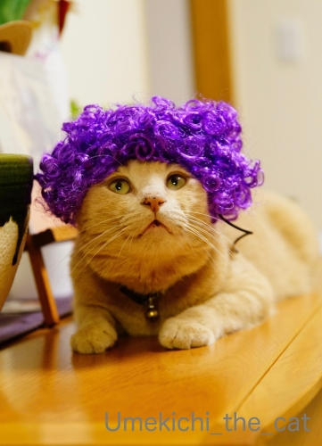
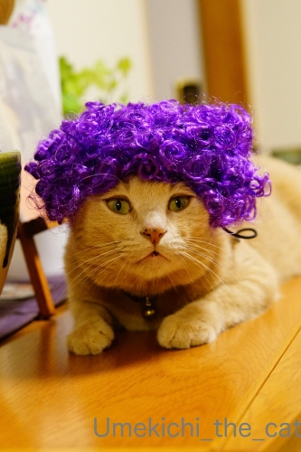
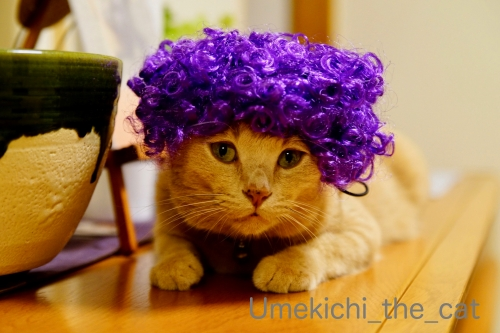
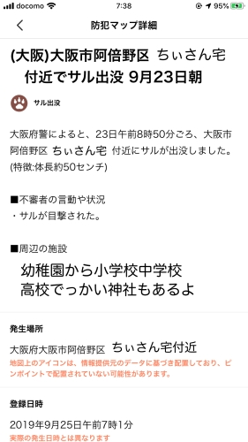
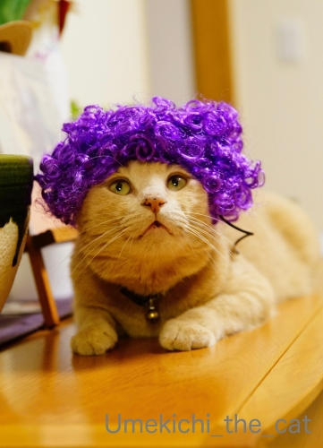
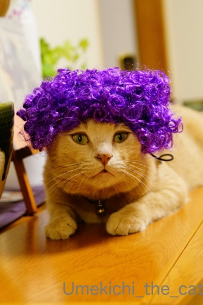
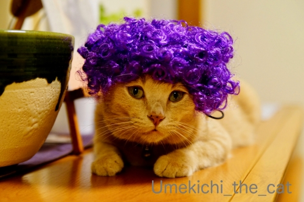
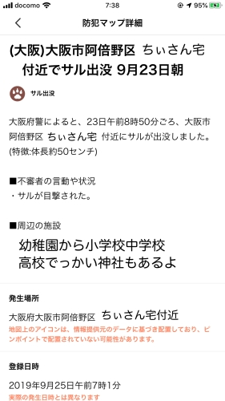

おばちゃんっぽさとファンキーさは通じるものがあるのか・・・ [梅吉]
10月1日よりSo-net ブログの名称およびドメインが変更となり等ブログのULRが
https://umekichi-the-cat.blog.ss-blog.jp/
に変わっております。
ブックマークをされている方がいらっしゃいましたらお手数ですが変更をお願いしますm(_ _)m

70年代ソウルミュージシャンっぽいファンキーな感じを狙っていたのに・・・・・

このおばちゃんっぽさはどういうことなんだろう。

それはあにゃたがなにわっ子だからですかー！！
〜〜〜〜〜〜〜〜〜〜〜〜〜〜〜〜〜〜〜〜〜〜〜〜〜〜〜〜〜〜〜〜〜〜
スマホの地図アプリはGoogle Mapsの他にYahoo!MAPも入れています。
そのYahoo!MAPには防犯マップという機能があり
自分ちの近辺で起きた犯罪情報（ひったくりとか痴漢とか諸々）を知らせてくれるのですが・・・
先日届いた情報が

まさかの「サル出没」情報！！
まじですか・・・(ｰ ｰ;)
我が家は阿倍野区ではないのですが目撃情報があったのは歩いて5分くらいで行ける場所。
私の買い物ルートの一つでもあります。
続報も出ていないしニュースにもなってないので見間違いだった可能性もあり？
もし本当だとしたらペットなのか野生なのか不明ですけどおサルさん怖いですよね・・・
目を見ちゃいけないんでしたっけ？でも出会ったらきっと見ちゃうー！
もう二週間近くも前の情報なので何も起きないとは思っていますが
人気のないところでガサガサと音がするちょっとビクッとするこの頃です。
目の届かない部屋の窓を開けておくのもちょっと怖い。
賢いから開けて入ってきますよね・・・
もともと梅吉脱走防止用に窓枠ストッパーはしているのですが
よりきつめに締めるようにしました。
皆さんのお宅の近辺に野生動物が出没したことってありますか？？？
ちなみに我が家付近では時々いたち？フェレット？？らしきものが走ってますwww
我が家、山の麓じゃないんだけど( ；∀；)
 ↑ガブッと一押し↑
↑ガブッと一押し↑
https://umekichi-the-cat.blog.ss-blog.jp/
に変わっております。
ブックマークをされている方がいらっしゃいましたらお手数ですが変更をお願いしますm(_ _)m

70年代ソウルミュージシャンっぽいファンキーな感じを狙っていたのに・・・・・

このおばちゃんっぽさはどういうことなんだろう。

それはあにゃたがなにわっ子だからですかー！！
〜〜〜〜〜〜〜〜〜〜〜〜〜〜〜〜〜〜〜〜〜〜〜〜〜〜〜〜〜〜〜〜〜〜
スマホの地図アプリはGoogle Mapsの他にYahoo!MAPも入れています。
そのYahoo!MAPには防犯マップという機能があり
自分ちの近辺で起きた犯罪情報（ひったくりとか痴漢とか諸々）を知らせてくれるのですが・・・
先日届いた情報が

まさかの「サル出没」情報！！
まじですか・・・(ｰ ｰ;)
我が家は阿倍野区ではないのですが目撃情報があったのは歩いて5分くらいで行ける場所。
私の買い物ルートの一つでもあります。
続報も出ていないしニュースにもなってないので見間違いだった可能性もあり？
もし本当だとしたらペットなのか野生なのか不明ですけどおサルさん怖いですよね・・・
目を見ちゃいけないんでしたっけ？でも出会ったらきっと見ちゃうー！
もう二週間近くも前の情報なので何も起きないとは思っていますが
人気のないところでガサガサと音がするちょっとビクッとするこの頃です。
目の届かない部屋の窓を開けておくのもちょっと怖い。
賢いから開けて入ってきますよね・・・
もともと梅吉脱走防止用に窓枠ストッパーはしているのですが
よりきつめに締めるようにしました。
皆さんのお宅の近辺に野生動物が出没したことってありますか？？？
ちなみに我が家付近では時々いたち？フェレット？？らしきものが走ってますwww
我が家、山の麓じゃないんだけど( ；∀；)

カフェオレ色の梅吉

梅吉 2023年8月10日 永眠


梅吉と出会った譲渡会

犬猫の理由なき殺処分ゼロ
妄想広告
UMEKICHI 光

爆発的に早い！
時々攻撃的！
Thanks to Mr.Boss365
爆発的に早い！
時々攻撃的！
Thanks to Mr.Boss365

はい、まさしく紫メッシュのおばちゃんパーマです(笑)
阿倍野区近辺でサルとは珍しい～
まさに出会ったら目を見ずサルに限ります(^^♪
by yamatonosuke (2019-10-03 01:03)
ソウルミュージックだったのですか。ファンキーなおばちゃんだと思ってました。
うちの近所でもサルが見つかったことあります。野生動物は見たことないけど巨大ネズミは時々見かけます。
by zombiekong (2019-10-03 01:09)
5年ほど前に庭をイタチが走っているのをみて驚きました
引っ越し前の家は奈良公園まで歩いていける距離だったので
茂みがガサガサ言うなと思ったら鹿が出てくるなんてこともありました
by 藤並 香衣 (2019-10-03 01:26)
むむ？それは梅吉さんのお顔がおばちゃんぽいとおっしゃってる？！
サル、怖いですよねー。
うちの近所は、見たことはないけど「たぬき出没注意」の看板なら見たことあります(^^;;
あ！あと、野生じゃなくて、黒豚さんを飼っていてお散歩させてるのに出会ったことがあって、驚きました！
by ChatBleu (2019-10-03 06:15)
確かにファンキーというよりは、おばちゃんパーマのイメージがw
これはやっぱりクルクル具合がおばちゃんらしさを醸し出してるのか、
それともやはりなにわっ子の梅吉さんが原因なのかw
野生動物・・・かみさんは帰り道でフェレットに目の前を横切られ
びっくりして止まったらドヤ顔されたそうですw
by ニッキー (2019-10-03 06:43)
梅吉さん、ハイカラなおばあさんに変身ですね(^_^)
野生の猿は危険ですね。近くなので気を付けてくださいね。
我が家の近くは山なのでカモシカはしょっちゅう出ますがもう慣れてしまいました(^_^;)
by kou (2019-10-03 06:49)
梅吉さんお猿さんと遭遇したらどうなるんだろう？？？
いや！遭遇しないのが一番ですね。
by ニコニコファイト (2019-10-03 06:57)
いいなぁ、素直に被ってくれて＾＾
近所で見た野生動物はタヌキぐらいですかね？
広い道路を横断して行きました。
by ぽちの輔 (2019-10-03 07:19)
うっ梅吉さん・・・
ニョキニョキと角が生えてきそうな気がします（笑
野生動物！近所の土手は
だいぶ昔にアライグマがいたらしいです。
かなり狂暴らしいので
会いたくないです(;^_^A
by きぃ (2019-10-03 08:07)
今のところ古いURLでもリダイレクトされますが、少しずつ変更していかないとです(^^)
最近近所でハクビシンの目撃が増えているみたいです(^^)
by ma2ma2 (2019-10-03 08:51)
こんにちは。
梅吉君、似合っています。自然な感じ？嫌がっていないのが凄い！！
小生が初めてパーマをかけた時のヘアースタイルに似ています（笑）
「サル出没」は驚きです。「いたち？フェレット？」も自然豊かな感じ？
多分、ペット飼育で脱走？放置の可能性ありますね。
梅吉くんの為に、バルコニーのドアを閉めておいた方が良いかな？お気を付け下さい。
小生近所では野生動物は見かけませんが・・・
自宅マンションの２階ベランダ柵の上に猫が「エジプト座り」してました。
後日、管理人に聞いたら・・・
家猫で網戸を勝手に開けてベランダに出たみたい（笑）！？(=^･ｪ･^=)
by Boss365 (2019-10-03 09:35)
髪が紫のおばちゃん、近所の商店街にいらっしゃいます(#^^#)
梅吉さん、よく似合ってるわ～♪
私も、もしきれいに白髪になったら似しようかな^^
生まれが阿倍野区なんですが、タヌキやイタチは普通にいたけど猿に会ったことはないです(^▽^;)
野生なのかペットの猿が逃げたのか・・まさか天王寺動物園から？！
最近アシカの赤ちゃん流されてましたもんね。見つかってホントよかった。
by ゆきち (2019-10-03 12:19)
まちがいなくファンキーだわ！！
by yuppie (2019-10-03 14:00)
ファンキーでもあり、おばちゃんぽくもありｗ
ちょっとアフロがつぶれ気味だからおばちゃんパーマ風よりになってるのかな？
こｋれもスリコのヅラシリーズですか？（^^
野生のサルは以前の住まい界隈に一時期出没していて、登下校の小学生や自治会の掲示板に注意喚起のポスターがありました。
今は野生のイノシシが出るので餌付け禁止のポスターがあります。
フェレットみたいなのも公園にいたのを保護して元同僚が育ててますｗ(;^_^A
by marimo (2019-10-03 15:15)
ぷぷｗ
この髪型にヒョウ柄もしくはネコ科動物の顔が入った
Tシャツでもお召しになれば、完璧かと(￣▼￣)ﾆﾔｯ
でもかわいいのでOKですよ(*＾-ﾟ)v
え？サル出没のNEWSは知っていたのですが、ちぃさん
お住まいの付近でしたか！！それは怖いですよねΣ(￣ロ￣lll)
結局捕まったのかしら...不安ですね。
お買い物やお散歩時はどうぞお気をつけくださいませ。
by カトリーヌ (2019-10-03 16:41)
おっと、先生に花が咲いた！
記念にガブッといっときます。＾＾
by 小松達也 (2019-10-03 19:34)
あれ？ ガブッとがない！ ><
by 小松達也 (2019-10-03 19:35)
田舎なので、お猿さんは近くで見た事があります。
お猿さんは集団でいます。
写真にも撮りました＾＾
by riverwalk (2019-10-03 21:14)
おお。梅吉さんソウルフルですね！ ^^)
それにしても被り物が平気なんて羨ましー。
サル出没！！里山ではたまに見かけますが、都会では珍しいですよね。
お猿さんも見慣れない風景にビックリしているのかも。
by yes_hama (2019-10-03 21:52)
ハロウィンの仮装じゃないのか（ﾟ□ﾟ）
by 英ちゃん (2019-10-04 00:16)
さすがに家付近で猿に遭遇したことは無いけど
実家の窓をあけたら、お向かいの小高い丘にキタキツネっていうのは
高校時代までのあるあるだったわｗｗ
ペットと泊まれる温泉宿に、先代猫のゆずと一緒に行ったとき、
窓の障子をあけたら、ちょうど目の前の木で休んでいた猿と遭遇。
抱っこしていたゆずと猿はバッチリ目があってしまって
ゆずは軽くパニック。猿もびっくりして逃げて行ったってのは、懐かしい思い出です(笑)
by リュカ (2019-10-04 09:19)
梅吉さん、紫でファンキーだわ！
顔つきが可愛らしい～ちゃんとつけててくれるのがなんていい子なんでしょ＾＾
猿がかなり遠い距離を移動してて捕まらないって話題になったこと、うちの方でもありました。すぐ近くで見られたわけじゃなかったけど。
狸なら我が家の前で見たことありますよ。タクシー降りたら街灯の下にいたんでびっくり。その後も遠目に見かけたり。ご近所の誰かが餌をやっているのかも？
住宅街のど真ん中だけど、ちょっと離れれば雑木林やお寺の裏山があるから、暮らせないこともないかも＾＾
by sana (2019-10-04 21:12)
わ〜〜〜 浪速のオバちゃんや〜〜〜
アメちゃん、ちょーだーい(^.^)
･･･ところで、いただいたフード、一部の子には大好評で♪
ありがたく使わせていただいてます♡ ウメ吉オバちゃん、おおきになっ♡
by のらん (2019-10-05 08:02)
パープルウィッグもお似合いで♡
おばちゃん感は否めませんがドリフの雷様っぽい気も…笑
サル、間近で見ると迫力あるし、逃亡中なら気も立ってそうだから
怖いですね。
無事に捕獲されて元の場所に戻してもらえたらいいですね…
by liang (2019-10-05 08:29)
コメントが投稿に失敗して、3回目です（笑）
梅吉さんのは帽子ではなかった？（笑）
確かにファンキーですが、おばちゃん度が強いですね（笑）
こういうキリキリにパーマをかけた人は滅多に観ませんが、鮮やかな色がついた人は見たことあります。
緑やピンク、静かに2度見します（笑）
by kiki (2019-10-05 08:36)
あと白い割烹着着せたらばっちりですよ(*^-^*)
by palpal (2019-10-05 09:21)
ウチはタヌキとイタチが庭に来訪しました。
目が点になりました。
いわゆる住宅街ですし、そこまで田舎とは
思っていなかったので。
by あとりえＳＡＫＡＮＡ (2019-10-05 19:06)
梅吉くん、ファンキーですよ。
関西のおばちゃんには見えませんよ(*＞艸*)
猿出現ですか！
お互いのために、事故とか事件とかないといいよね。
by emi (2019-10-06 16:07)
言われなければわからなかったのに~^m^
確かにおばちゃんに見えてしまった。
きれいな紫色~
by ふにゃいの (2019-10-06 21:33)